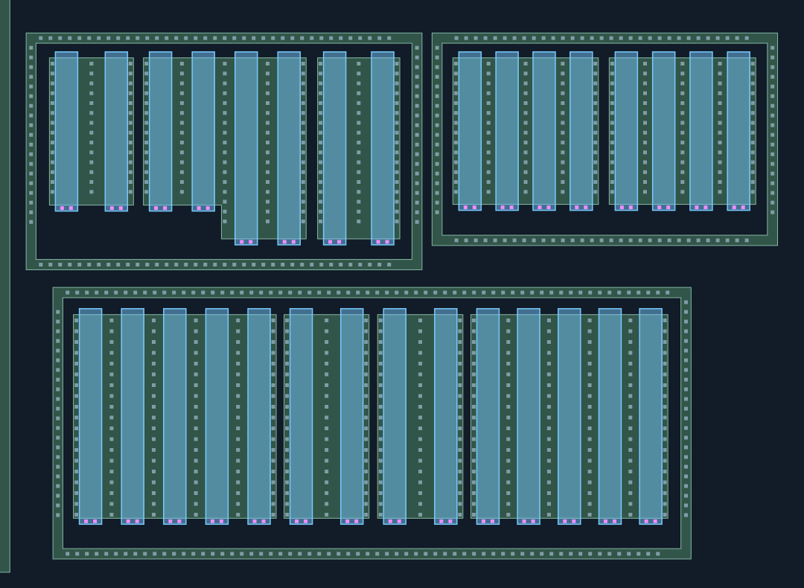
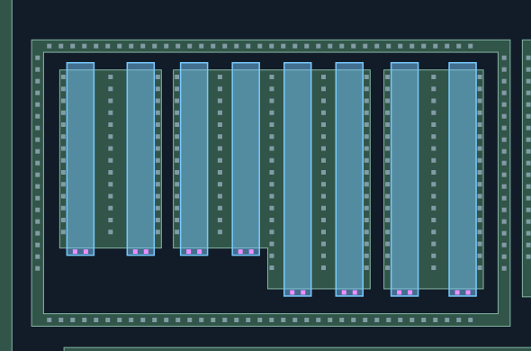
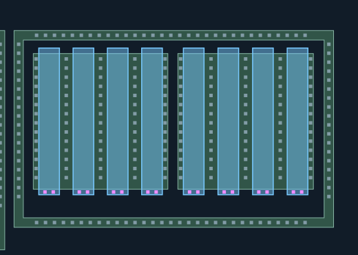
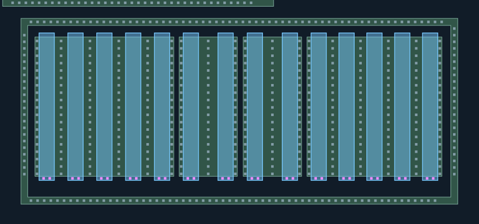
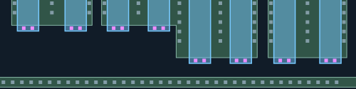
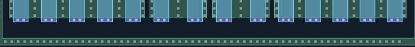

CT材料联合重建复核
人审通过：A/B/C共30条栅下端的孔位置及每栅两孔合理，60个POLY CT已锁定。 批准原话 · 范围锁定。M1具体连接与共栅关系继续未知，图稿保留验收版本。
蓝色：新增AA接触；紫色：新增POLY接触；灰蓝：已审CT，保持不变、不重复验收。
新孔均有照片观察支持，采用局部材料对应，未使用全幅盲投影。AA/POLY材料未修改。
橙色虚框仅为待查槽位，不计为CT，也不代表实际缺孔。
仅重建下列局部观察支持的孔列；未补齐缺少证据的位置，未画不代表没有孔。
新区域的材料对应仍为AI候选，孔数不是人工确认值。几何检查不是真实工艺DRC，M1归属未知。
整体质量门与防退化检查 ·
匹配与未选择观察记录 · 覆盖及边界 · A/B/C位置核对
Q2：30条栅下端CT位置候选
已确认栅CT位于下端。紫色为新POLY接触候选，灰蓝为原1825 CT。每条栅的两处强亮点来自原照片，孔数与精确位置仍为AI候选；两处较弱峰保留在测量台账，未因阵列期望补孔。M1仅交叉核对引出区域，不直接投影CT或确认共栅。
逐孔列数量与待查槽位（0起编号）
- Q2-QG01-GATE: 2 孔；待查槽位 []
- Q2-QG02-GATE: 2 孔；待查槽位 []
- Q2-QG03-GATE: 2 孔；待查槽位 []
- Q2-QG04-GATE: 2 孔；待查槽位 []
- Q2-QG05-GATE: 2 孔；待查槽位 []
- Q2-QG06-GATE: 2 孔；待查槽位 []
- Q2-QG07-GATE: 2 孔；待查槽位 []
- Q2-QG08-GATE: 2 孔；待查槽位 []
- Q2-QG09-GATE: 2 孔；待查槽位 []
- Q2-QG10-GATE: 2 孔；待查槽位 []
- Q2-QG11-GATE: 2 孔；待查槽位 []
- Q2-QG12-GATE: 2 孔；待查槽位 []
- Q2-QG13-GATE: 2 孔；待查槽位 []
- Q2-QG14-GATE: 2 孔；待查槽位 []
- Q2-QG15-GATE: 2 孔；待查槽位 []
- Q2-QG16-GATE: 2 孔；待查槽位 []
- Q2-QG17-GATE: 2 孔；待查槽位 []
- Q2-QG18-GATE: 2 孔；待查槽位 []
- Q2-QG19-GATE: 2 孔；待查槽位 []
- Q2-QG20-GATE: 2 孔；待查槽位 []
- Q2-QG21-GATE: 2 孔；待查槽位 []
- Q2-QG22-GATE: 2 孔；待查槽位 []
- Q2-QG23-GATE: 2 孔；待查槽位 []
- Q2-QG24-GATE: 2 孔；待查槽位 []
- Q2-QG25-GATE: 2 孔；待查槽位 []
- Q2-QG26-GATE: 2 孔；待查槽位 []
- Q2-QG27-GATE: 2 孔；待查槽位 []
- Q2-QG28-GATE: 2 孔；待查槽位 []
- Q2-QG29-GATE: 2 孔；待查槽位 []
- Q2-QG30-GATE: 2 孔；待查槽位 []
O 位置总览
蓝色为新AA接触候选；黄色POLY与AA保持既有结果。GA/GC仅供辨别端部边缘和真实孔，不自动声明栅CT。
双击图像可在新页放大查看。

A 上左A：阶梯AA及外围环
蓝色为新AA接触候选；黄色POLY与AA保持既有结果。GA/GC仅供辨别端部边缘和真实孔，不自动声明栅CT。
双击图像可在新页放大查看。

B 上右B：两组四指及外围环
蓝色为新AA接触候选；黄色POLY与AA保持既有结果。GA/GC仅供辨别端部边缘和真实孔，不自动声明栅CT。
双击图像可在新页放大查看。

C 下方C：多组栅指及外围环
蓝色为新AA接触候选；黄色POLY与AA保持既有结果。GA/GC仅供辨别端部边缘和真实孔，不自动声明栅CT。
双击图像可在新页放大查看。

GA 上左A栅端原图细看
蓝色为新AA接触候选；黄色POLY与AA保持既有结果。GA/GC仅供辨别端部边缘和真实孔，不自动声明栅CT。
双击图像可在新页放大查看。

GC 下方C栅端原图细看
蓝色为新AA接触候选；黄色POLY与AA保持既有结果。GA/GC仅供辨别端部边缘和真实孔，不自动声明栅CT。
双击图像可在新页放大查看。
